Graphics
Pink Panthers Logo
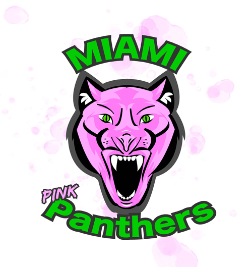

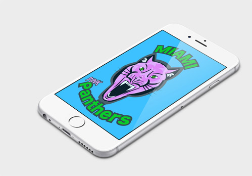
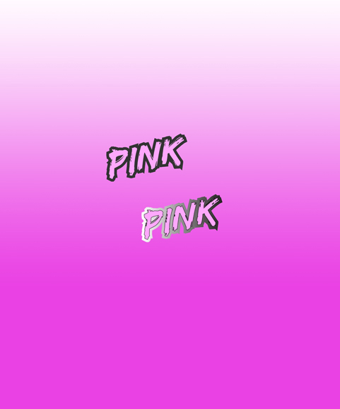
Green House
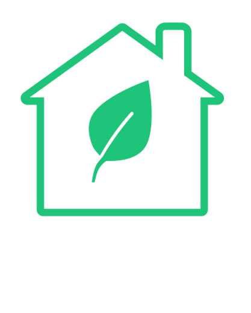
desgined with the intention of creating positive everyday habits that relate to climate change.
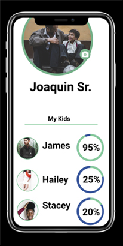
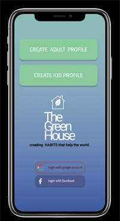
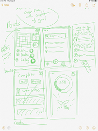
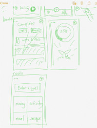

"Child" giving the whole family a chance to interact with the program. The
parent profile allows for tracking app allows parents to assign task and track
the completion of task assigned. The child profile can track the completion of
task assigned to it, mark task as complete and submit them for review by the parent profile.
Green House personas
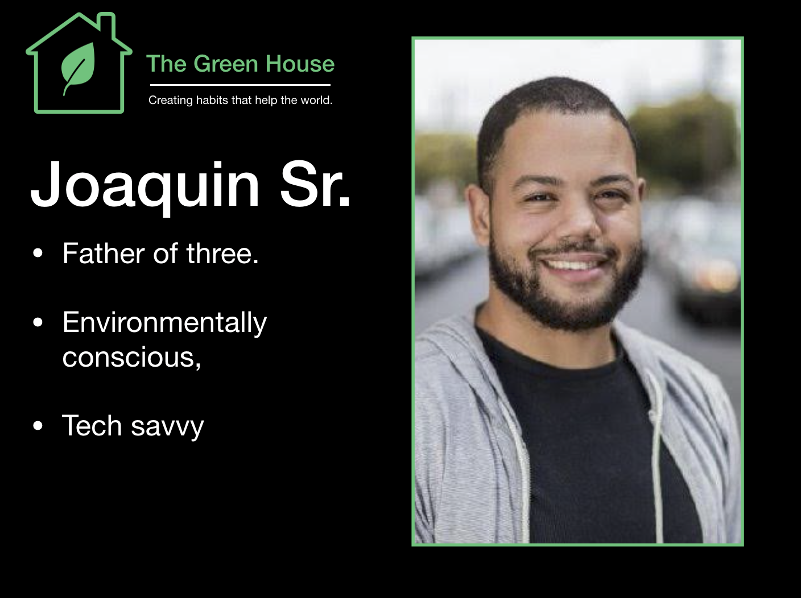
Wireframe Concept work
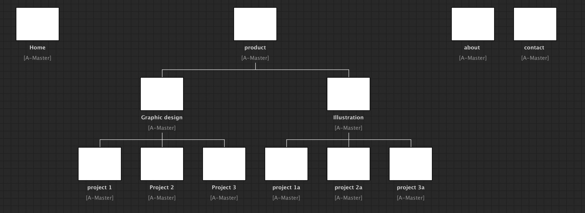
Bussiness card
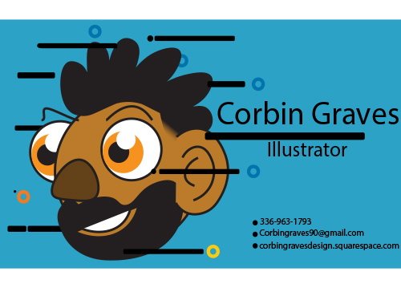
Desinging a brand is easy when you know what to do!